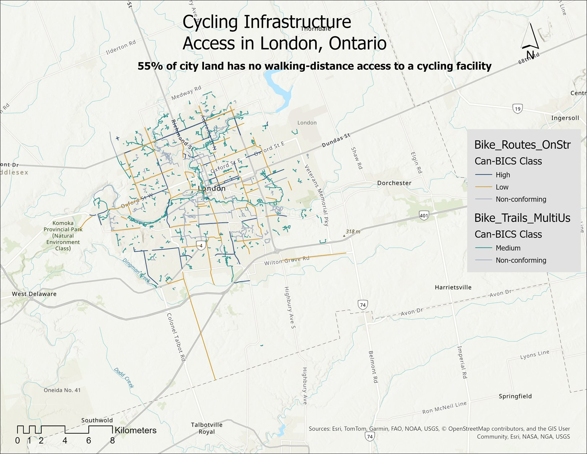

London ON · Bikeability Analysis
I mapped London's cycling network from the City's open data to answer one specific question: how much of the city is within walking distance of comfortable cycling infrastructure, and how much has nothing nearby. I classified every route with Can-BICS (the Statistics Canada national standard), drew access buffers scaled to how comfortable each route is, then measured the gap. It was also how I taught myself ArcGIS Pro — my first real project in it.
The setup
I live in London, and I wanted a concrete answer to a simple question: if you want to bike somewhere here, how likely is it that there's decent cycling infrastructure near you — and where in the city is there nothing?
"Bikeable" can mean a lot of things, so I pinned it down: walking-distance access to comfortable cycling infrastructure. A separated track counts for more than a painted line on a busy road, so I treated them differently instead of lumping all "bike infrastructure" together.
The data came from the City of London Open Data portal. Two cycling layers did the work: 300 on-street facilities (lanes, separated tracks, signed routes) and 2,482 off-street multi-use paths, mostly in parks.
A judgment call along the way
My first plan was a Level of Traffic Stress (LTS) analysis, which rates each street by how stressful it is to ride. But LTS needs speed-limit, lane-count, and road-class data on every road, and London's published road layer doesn't carry those fields, so it wasn't possible here. Rather than force it, I switched to a method the available data could actually support.
Working out that the data couldn't answer the question the way I'd first planned, before I'd sunk much time into it, was one of the more useful habits I picked up here.
Methodology
I used Can-BICS — the Canadian Bikeway Comfort and Safety classification system (Winters, Zanotto & Butler, 2020), the Statistics Canada national standard for naming cycling infrastructure. Using the national standard matters: it means my classification lines up with how London gets measured nationally, instead of being something I made up. It sorts facilities into three comfort classes, plus a category for things that don't meet the bar.
| Class | What it is | Comfortable for |
|---|---|---|
| High | Separated cycle tracks, bike-only paths | Most people (all ages & abilities) |
| Medium | Paved multi-use paths | Some people |
| Low | Painted bike lanes on busy roads | Few people |
| Non-conforming | Sharrows, signed routes, walking trails | Doesn't meet the comfort bar |
Then the access question. A bike route is drawn as a line, and a line has no width, so on its own it can't tell you how much of the city is near a route. So I drew a band around each route (a "buffer"), sized to how comfortable the route is. A genuinely comfortable route is worth walking a bit further for.
| Class | Buffer | Why |
|---|---|---|
| High | 500 m | Williams et al. 2023 — a Canadian study on this kind of infrastructure |
| Medium | 400 m | NACTO neighbourhood-spacing guidance (~¼ mile) |
| Low | 200 m | A painted lane on a busy road doesn't earn a big band |
| Non-conforming | none | Doesn't count as comfortable access |
I combined all the bands into one "anywhere you can reach a facility" shape and subtracted it from the city. What's left over is the gap. I ran the whole thing in ArcGIS Pro.
What I found
of London's land has no walking-distance access to any comfortable cycling facility.
The gap is almost entirely the suburban edges and the rural fringe; the access that exists clusters in the centre and inner neighbourhoods. The more telling number shows up when you ask what kind of access it is:
Roughly 20 points of London's measured cycling access is recreational park pathway — great for a weekend ride, but not a connected network that gets you to work.
The gap, mapped
Red is everywhere more than a short walk from a comfortable cycling facility. The access bands cluster in the centre; the outer ring is almost all gap.
This lines up with something the research already noted but couldn't fully explain. Winters et al. (2022) found that in London, the amount of cycling infrastructure barely predicts how many people bike to work — which is unusual for a Canadian city. One suggested reason: a lot of London's network is recreational (the Thames Valley Parkway and similar) and doesn't connect to where people work. My result shows that mechanism directly: a big share of what counts as cycling "access" in London is recreational pathway, not commuter routes.

Limitations
I'd rather be upfront about the soft spots than oversell this.
Phase 2
Phase 1 is the foundation — what exists, and where the gaps are. Three studies build on it, and any one of them could turn out to be a bigger finding than the map that made it possible. They're independent, so they can happen in any order.
Lay Census population and a deprivation index — the national CIMD, or Ontario's ON-Marg — over the gap zones. If the places with no comfortable access turn out to be the city's lower-income or more marginalized neighbourhoods, the gap stops being a map problem and becomes an equity one.
Bring in London's bicycle-collision records and test them against the comfort classes. A 2022 Western thesis found the city's bike lanes linked to fewer collisions but couldn't tell the lane types apart — and named that as the open question. The Can-BICS classification here is the missing variable, so this lens could show which comfort classes actually reduce crashes.
The data carries install and rehabilitation years. Filtering by them rebuilds the network at any past date — so this lens can show when each comfort class first appeared in London, and whether the comfortable end has been catching up or falling behind.
Sources